Vector basics
Vectors in Maple are handled by the VectorCalculus and LinearAlgebra packages. You should probably load these packages each time you use Maple for this course.
| > |
restart; with(LinearAlgebra): with(VectorCalculus): |
Warning, the names &x, CrossProduct and DotProduct have been rebound
Warning, the assigned names <,> and <|> now have a global binding
Warning, these protected names have been redefined and unprotected: *, +, ., D, Vector, diff, int, limit, series
Vectors
You can enter a vector using its components just as we do on paper. You can have two or three components.
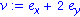
The e_x, e_y, and e_z notations are essentially the unit vectors that we call i, j, and k.
There is also a special Vector command. Be sure to capitalize!
The entries of a vector or list can be symbols.
| > |
v:= Vector([A+B,2*Pi,f(t)]); |
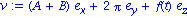
You can access the elements of a list or vector using another bracket notation.
Arithmetic
For addition, subtraction, and scalar multiplication, use the usual operators.
| > |
w:= <6,-1,2>;
v:= <0,3,1>; |
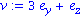
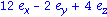
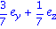
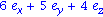
The vector between two points is the difference in the points' coordinates.
| > |
P:= [3,1,-2];
Q:= [0,2,2]; |
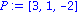
Notice that we can and should make a distinction in Maple bewteen the point with coordinates (x,y,z) and the vector with components <x,y,z>. You saw above how to convert a point to a vector. To reverse the process, use
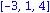
To get vector magnitude, use the Norm function.
This runs into a small problem for vectors with entries that are unknown variables.
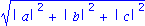
The issue is that Maple tends to assume unknowns are complex numbers, not real. That's technically right but gets in our way a lot. To get around it you can use a clunky form to avoid the notation.
| > |
Norm( <a,b,c>, 2, conjugate=false ); |
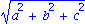
Here's how to make a unit vector parallel to v:
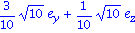
Example
Find a unit vector tangent to the graph of
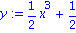
at the point (1,1).
First we find the slope of the tangent line.
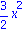
| > |
slope:= eval( %, {x=1,y=1} ); |
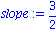
This line is parallel to a vector which goes up 3 and right 2. So define
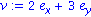
Finally, make a unit vector in the same direction.
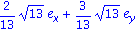
There is another correct answer. Do you know what it is?
Dot and cross products
Dot and cross products are found using . and &x.
| > |
u:= <-3,6,2>: v:=<2,1,4>: |

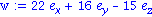

Another way to find a vector's magnitude is by
Every two-dimensional unit vector can be written as
| > |
v:= < cos(theta), sin(theta) >; |
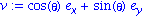

Finding the angle between vectors using the standard formula:
| > |
u:= <3,-1,5>: v:= <2,0,-4>: |
| > |
costheta:= (u.v)/(Norm(u,2)*Norm(v,2)); |
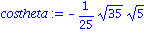
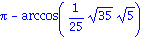
This answer is in radians, which is the natural angle measure for mathematics and computation. To convert to degrees you can say
| > |
evalf( convert( %, degrees) ); |
A shortcut for angles:
Example
Show that the points
| > |
P:=[1,0,1]: Q:=[2,4,6]: R:=[3,-1,2]: S:=[6,2,8]: |
all lie in a single plane.
The points are coplanar if and only if the parallelepiped ("slanted box") that they define has zero volume. This volume is just a triple scalar product. (Order in the product doesn't matter here.)
| > |
PQ:= Vector(Q-P):
PR:= Vector(R-P):
PS:= Vector(S-P): |
| > |
vol:= abs( PQ . ( PR &x PS ) ); |
Example
Prove the triple product identity, a . (b x c) = (a x b) . c
Let the vectors have arbitrary unknown components.
| > |
a:= <a1,a2,a3>: b:= <b1,b2,b3>: c:= <c1,c2,c3>: |
Create the two expressions.

It's hard to make one expression look exactly like the other, but it's easy to show that their difference is zero.
| > |
simplify( expr1-expr2 ); |

Vector equations
Vectors are equal if all their components are identical. The correct way to set all components equal is to use the equate command in the student package.
Example
(See Example 5 in Section 13.2 of Stewart.) A 100-lb weight is hung from two wires at angles of 50 and 32 degrees. What are the tensions in the wires?
This is a force-balance problem. The forces consist of 2 wire tensions and the weight. We define the wire tension vectors first (don't forget to convert degrees to radians). The unknown magnitudes are called A and B.

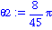
| > |
T1:= A * <-cos(theta1), sin(theta1)> ; |
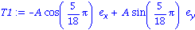
| > |
T2:= B * <cos(theta2), sin(theta2)> ; |
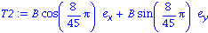
The weight is straight downward.
The force balance equation:
Warning, the protected name D has had its previous binding removed and has been assigned
| > |
balance:= equate( T1+T2+w, <0,0> ); |
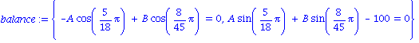
Now we have a set of 2 equations in the 2 unknowns A and B. We can use solve or fsolve to find the answer. For numerical answers fsolve is often better.
| > |
fsolve( balance, {A,B} ); |
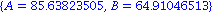
Plots
You can draw lines representing vectors by using the arrow command in the plots package.
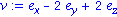
| > |
arrow( v, color=red, labels=["x","y","z"], axes=normal ); |
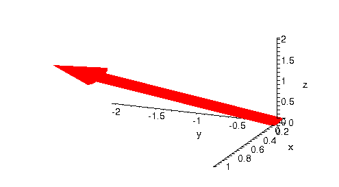
You can plot multiple vectors, or string vectors together. All it really does is join a list of points by straight lines.
| > |
arrow( [v,w], color=red, labels=["x","y","z"], axes=normal ); |
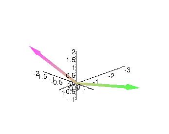